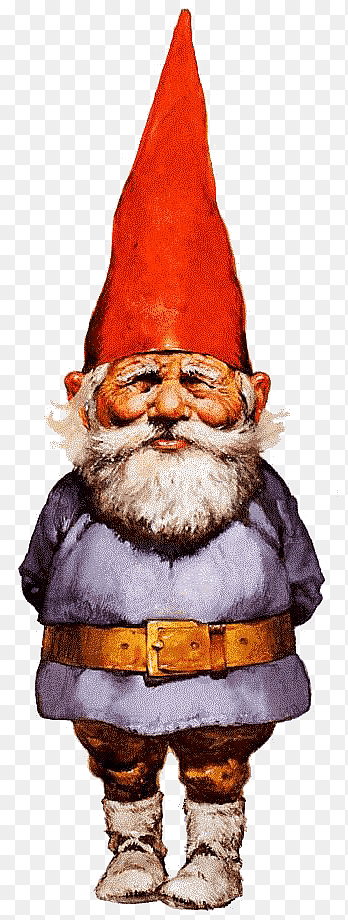

About Gnomes
Gnomes consist of a number of different types. The most common is the Forest Gnome who rarely comes into contact with man. The Garden Gnome lives in old gardens and enjoys telling melancholy tales. Dune Gnomes are slightly larger than their woodland brethren and choose remarkably drab clothing. House Gnomes have the most knowledge of man, often speaking his language. It is from this family that Gnome Kings are chosen. Farm Gnomes resemble their House brethren, but are more conservative in manner and dress. Siberian Gnomes have been more interbred than other Gnomes and associate freely with trolls . They are much larger than the other types and have an infinitely more nasty nature. It is best never to evoke the ire of such Gnomes for they delight in revenge. Gnomes tend to live in hilly meadows and rocky woodlands. In Huygens's book, it says they live in three trees, the house itself, with a hidden entrance from another tree, and then a third is the supply room, with grains, beans, potatoes and everything else the gnomes may need during the winter.
A Happy Gnome with his Family.
Types of gnomes
- Rock Gnomes
- Forest Gnome
- Deep Gnomes
- River Gnomess